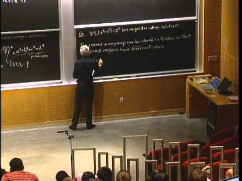
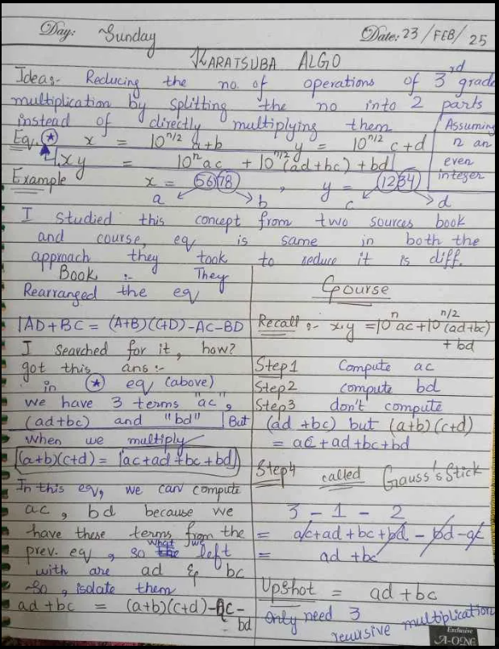
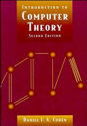
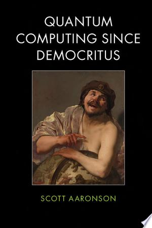
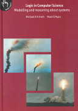

How I began working in formal methods from bioinformatics
16 August 2026

In summer 2024, after my first year, I was still exploring both the biology and computer science sides of my bioinformatics degree (program outline). I looked into biology and bioinformatics-related work, while also trying web development and AI through MLH hackathons and programs such as buildspace and Headstarter. I learned something from each, but none of them felt like something I wanted to keep pursuing.
In late 2024, during my second year, I was looking on YouTube for linear algebra lectures when I found MIT's Mathematics for Computer Science lectures, taught by Professor Tom Leighton and Dr. Marten van Dijk. I had already studied basic logic in my second-semester discrete mathematics course but I liked the way Professor Leighton used chalk and a blackboard while talking through logic and proofs.
I kept following related searches and soon found Theoretical Computer Sciences (TCS), an area covering Turing machines, computational complexity, , halting problem and much more. I was surprised that I had never seen this side of computer science before.
{kind=link}

At first I only took notes. They were messy and had no real structure. Later I started keeping a Notion page (not updated for a while) and wrote a Medium post (I stopped posting there too). Around the same time, I began reading Daniel Cohen's Introduction to Computer Theory.

After a while, reading, doing exercises and taking notes, both on paper and in Notion, were not enough. I wanted to work on a proper project, but there were few people around me working in TCS . I spent a long time contacting professors/seniors for finding TCS professor before I found only one faculty member working in one of the area of TCS i.e. formal methods and who was willing to guide my initial reading. Because he was abroad at that time, our conversations were intermittent at first.

While exploring TCS & formal methods, I briefly looked into quantum computing as well. I wondered what formal verification of quantum programs might look like, read parts of Scott Aaronson's Quantum Computing Since Democritus, and came across work such as this paper. I made notes and short reviews of some of this reading here , but kept returning to logic, proofs, and formal methods.
Meanwhile, I remained in contact with the formal-methods faculty member I had found earlier. He first asked me to study the paper Formal Verification Methods. It introduced me more directly to formal verification, automated theorem proving, and interactive theorem proving. I prepared slides about what I had understood and presented them to him. When he asked which direction I wanted to follow, I chose interactive theorem proving because I wanted to construct the arguments myself rather than treat the proof process as automatic. After the presentation, he accepted me as a student researcher under his supervision.

At the beginning of that supervision, he gave me Michael Huth and Mark Ryan's Logic in Computer Science. The book made me look at logic differently by connecting it with the modelling and verification of computer systems.
I was working alone then, without a teammate, so progress was slow. I also had to complete an internship for my degree and took an ML/DL internship for the summer. Around the time I was selected for it, I finally found a teammate. That made a sustained theorem-proving project seem much more possible, and in summer 2025 we began working on it properly. What started as a small project later became my final-year project.
We first explored Lean4 theorem prover through Lean4 server games and also did small/basic formalizations such as calculator, fibonacci series and inference laws. During my operating-systems course in fall 2025, my teammate and I read about the verification of seL4, and systems verification began to interest us more. We then moved to Rocq, whose long use in C verification, including CompCert and the Verified Software Toolchain, suited the kind of work we wanted to attempt. I learned it through Software Foundations and later found its Verifiable C material particularly relevant.
What I liked most was working through one goal at a time. I could define something, state the property I expected it to have, and then try to prove it. Whenever my reasoning was incomplete, Rocq made that visible. That way of working suited me.
Reading
These are some of the books I read from, or at least spent time with, while I was finding my way into the subject:
- Introduction to Computer Theory, Daniel Cohen
- Logic in Computer Science, Michael Huth and Mark Ryan
- Book of Proof, Richard Hammack
- How to Prove It, Daniel Velleman
- Introduction to Linear Algebra, Gilbert Strang
- Introduction to Theoretical Computer Science, Boaz Barak
- Algorithms Illuminated, Part 1, Tim Roughgarden
- Quantum Computing Since Democritus, Scott Aaronson
- Introduction to Classical and Quantum Computing, Thomas Wong
- First Step to Quantum Computing, Javad Shabani and Eva Gurra
- Programming Quantum Computers, Eric Johnston, Nic Harrigan, and Mercedes Gimeno-Segovia
- Logicomix, Apostolos Doxiadis and Christos Papadimitriou
- Game Theory: An Introduction, Steven Tadelis
- Operating Systems: Three Easy Pieces, Remzi and Andrea Arpaci-Dusseau
While I was reading and trying to find people working in these areas, looking for research opportunities became part of the same routine. Information about eligibility and funding for international students was usually spread across several pages, so I started a public research-opportunities list so I could keep what I found in one place and share it with others.